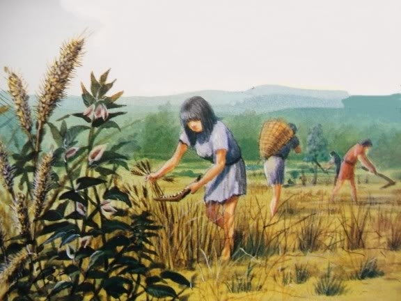

Istoricul agriculturii

Agricultura, cultivarea pământului pentru a crește plante a constituit ramura principală de la începuturile civilizației. Această ocupație asigură cea mai mare parte a alimentelor; materiale necesare pentru îmbrăcăminte și alte materii prime pentru industrii.
În urmă cu 10-12 milioane de ani a avut loc o mare revoluție în dezvoltarea rasei umane. Aceasta a reprezentat-o descoperirea faptului că hrana se obține nu doar prin strângerea plantelor sălbatice și vânarea animalelor ci și prin cultivarea plantelor din semințe și prin creșterea în captivitate a anumitor animale.
Agricultura contemporană
Jumătate din populația globului lucrează în agricultură. Există însă mari diferențe între rolul jucat de agricultură în diferite zone ale planetei. În țările aflate în curs de dezvoltare, ca de exemplu Nepalul, aproximativ 90% din populație lucrează pământul.
Spre deosebire de acestea, doar aproximativ 2% din populația activă se ocupă cu agricultura, în țări industrializate precum Regatul Unit al Marii Britanii și Statele Unite ale Americii. Cu toate acestea, datorită înaltei eficiențe și tehnicilor științifice utilizate, Statele Unite reprezintă cel mai mare exportator de produse agricole.
Studii economice pe țară
Pentru a favoriza exporturile studiile pe țară, globale sau pe sectoare sunt propuse gratuit pe site-ul lor internet, prin organisme guvernamentale. Printre acestea se gasesc : United States Departement of Agriculture (USDA) și Agriculture and Agri-Food Canada (AAC), care reprezinta două din cele mai importante țări exportatoare de produse agricole. Aceste două ministere, alături de alte asociații, universități sau intreprinderi, le difuzeaza de asemenea pe site-ul Globaltrade.net.
Globaltrade le claseaza în functie de două criterii de selectionare : de țară studiata și de industrie.